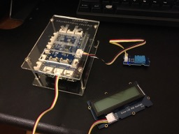
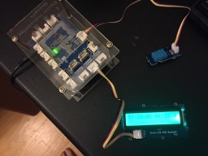
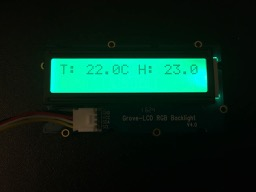

Axel's Blog
Home Weather Display with Nerves and GrovePi
Last year, when I first discovered you can use Elixir with Nerves Project on a Raspberry Pi, I bought a Raspberry Pi and started playing around with a "hello world" blinky project. I got blinky working and progressed to a traffic light project.
Then I kind of hit a wall trying to learn Serial Peripheral Interface bus (SPI) and I2C (Inter-Integrated Circuit) protocols to connect to sensors. I had a really hard time figuring out how to read datasheets to get the protocols to communicate with the sensors. Recently, I discovered the GrovePi+ and it has helped me break through those challenges to start building more interesting projects with my Raspberry Pi.
This post describes a Home Weather Display project to show how easy it is to get started with Nerves and GrovePi. The project reads a digital humidity and temperature (DHT) sensor and updates a RGB LCD display with the data. The project was inspired by this Python project.
Required Hardware
This project requires the following hardware (all Grove hardware, except the case, came with the GrovePi+ Base Kit I purchased to get started):
- Raspberry Pi + SD card
- GrovePi+ or GrovePi Zero (I used a GrovePi+, but a GrovePi Zero works as well)
- GrovePi case (optional)
- Grove DHT11 Sensor (the blue one)
- Grove RGB LCD display
- Grove Connection wires x 2
Hardware Setup
-
Follow the instructions included with your GrovePi+ to attach your GrovePi+ to your Raspberry Pi.
-
On the GrovePi+ (or GrovePi Zero), connect a DHT11 to port D7 and a RGB LCD display to the I2C-1 port.
Here is a picture of everything set up on my GrovePi+.

Initial Project Setup
-
Install Nerves using these instructions if you don’t already have it installed.
-
Run
mix nerves.new home_weather_displayin your shell and enteryforfetch and install dependencies?. -
Follow the GrovePi application instructions to add it to your deps:
def deps do
[{:grovepi, "~> 0.4.0"}]
end
- Run
mix deps.getto download the dependencies.
Programming the Home Weather Display
The GrovePi application lets you interact with the GrovePi+ and any connected sensors in Elixir. It will automatically start with your application and initiate a connection to the GrovePi+ board.
You can use GrovePi.Digital (docs)
or GrovePi.Analog (docs)
to directly interact with sensors. However, we are going to use the
GrovePi.DHT (docs) and
GrovePi.RGBLCD (docs)
modules to more easily communicate with these components.
Polling on the DHT
The GrovePi.DHT module uses the GrovePi.Poller behaviour and allows you to poll
(i.e. read at regular intervals) your DHT sensor.
- Add the
GrovePi.DHTmodule into your supervision tree inlib/home_weather_display/application.ex. Also include the@dht_pinand the@dht_polling_intervalwhich is an optional argument. The default polling interval is .1 seconds which is more frequent than needed for our project, so we’ll use 1_000 ms or 1 second. Adding theGrovePi.DHTmodule as a worker starts a GenServer for polling on your DHT sensor connected to port D7.
lib/home_weather_display/application.ex
defmodule HomeWeatherDisplay.Application do
use Application
@dht_pin 7 # Use port D7 for the DHT
@dht_poll_interval 1_000 # poll every 1 second
def start(_type, _args) do
import Supervisor.Spec, warn: false
children = [
worker(GrovePi.DHT, [@dht_pin, [poll_interval: @dht_poll_interval]]),
]
opts = [strategy: :one_for_one, name: HomeWeatherDisplay.Supervisor]
Supervisor.start_link(children, opts)
end
end
- Create your HomeWeatherDisplay module, a GenServer that will subscribe to the
DHT sensor using
GrovePi.DHT.subscribe/2during initialization. Updatelib/home_weather_display.exwith the following.
lib/home_weather_display.ex
defmodule HomeWeatherDisplay do
use GenServer
require Logger
alias GrovePi.{DHT, RGBLCD}
# Accept the DHT pin as an argument
def start_link(dht_pin) do
GenServer.start_link(__MODULE__, dht_pin)
end
def init(dht_pin) do
# Subscribe to DHT pin when event :changed is triggered
DHT.subscribe(dht_pin, :changed)
{:ok, []}
end
end
Add HomeWeatherDisplay as a worker in your supervision tree and
pass in @dht_pin as an argument.
lib/home_weather_display/application.ex
children = [
worker(GrovePi.DHT, [@dht_pin, [poll_interval: @dht_poll_interval]]),
# Add HomeWeatherDisplay to supervision tree
worker(HomeWeatherDisplay, [@dht_pin]),
]
- There is only one type of event for the
GrovePi.DHTby default;:changed. TheGrovePi.DHTwill poll every second but an event is only triggered when the value of either temperature or humidity changes. When an event is triggered,GrovePi.DHTwill send a message to all subscribed processes in the form of{pin, :changed, %{temp: 11.3, humidity: 45.5}.
You can use GenServer.handle_info/2 to receive the Grovepi.DHT message.
lib/home_weather_display.ex
def handle_info({_pin, :changed, %{temp: temp, humidity: humidity}}, state) do
text = format_text(temp, humidity)
Logger.info text
{:noreply, state}
end
def handle_info(_message, state) do
# handle any unexpected messages
{:noreply, state}
end
defp format_text(temp, humidity) do
"T: #{Float.to_string(temp)}C H: #{Float.to_string(humidity)}%"
end
When handle_info/2 receives the :changed message, it takes the temp and
humidity data and formats it to a string. Right now we are just logging the
data, so lets add code to update the RGB LCD Display.
Updating the RGB LCD Display
- We want an indicator when the numbers are changing so we’ll create a function
flash_rgb/0usingGrovePi.RGBLCD.set_rgb/3in theHomeWeatherDisplaymodule. You can write directly to the RGB LCD display without starting it in a supervision tree. It also currently always uses the I2C-1 Port, so that doesn’t need to be configured.
lib/home_weather_display.ex
defp flash_rgb() do
RGBLCD.set_rgb(0, 128, 64)
RGBLCD.set_rgb(0, 255, 0)
end
- In
HomeWeatherDisplay.init/1when our GenServer is starting up, let’s flash the display and useGrovePi.RGBLCD.set_text/1to say it’s ready.
lib/home_weather_display.ex
def init(dht_pin) do
# Add flash and initial display message
flash_rgb()
RGBLCD.set_text("Ready!")
DHT.subscribe(dht_pin, :changed)
{:ok, []}
end
- Now update the RGB LCD Display to show new data when the
:changedevent is received inHomeWeatherDisplay.handle_info/2.
lib/home_weather_display.ex
def handle_info({_pin, :changed, %{temp: temp, humidity: humidity}}, state) do
text = format_text(temp, humidity)
# Add indicator of update
flash_rgb()
# Update LCD with new data
RGBLCD.set_text(text)
Logger.info text
{:noreply, state}
end
Now when we receive updated data, the display will flash and show the new data. That’s it for the application, now you just need to burn your SD card and try it out!
Burn to SD Card
export NERVES_TARGET=my_targetor prefix every command withNERVES_TARGET=my_target, Example:NERVES_TARGET=rpi3- Install dependencies with
mix deps.get - Create firmware with
mix firmware - Burn to an SD card with
mix firmware.burn
Run the Program
- Insert the SD card in your Raspberry Pi
- Check the DHT is connected to Port D7 and the RGB LCD Display is connected to I2C-1.
- Power on your Raspberry Pi
- After your app boots, your RGB LCD Display should say “Ready!” and then begin showing temperature and humidity updates.
 
Conclusion
I hope others will see how fun and easy it is to use GrovePi and Elixir to communicate with sensors connected to your Raspberry Pi. The cool thing is once I got momentum building projects with different sensors, it motivated me to go back and learn how to read datasheets to understand how communcation is happening between my hardware. Good luck and have fun programming Elixir on your hardware!
The source code for the Home Weather Display can be found here. You can also check out the LED Fade and Alarm GrovePi example projects in the GrovePi GitHub repo. In addition, I’ve created a Home Detection project using the sound sensor, the RGB LCD Display and an LED. All of these projects use components from the GrovePi+ Base Kit.
 Written by Axel Clark who lives and works in Washington DC. He's currently learning Elixir/Phoenix and JavaScript/React/Redux. He also co-hosts the Noise Cancelling Pod, a podcast about streamlining life, encouraging discourse, and appreciating each other. You can contact or follow him on Twitter or GitHub.
Written by Axel Clark who lives and works in Washington DC. He's currently learning Elixir/Phoenix and JavaScript/React/Redux. He also co-hosts the Noise Cancelling Pod, a podcast about streamlining life, encouraging discourse, and appreciating each other. You can contact or follow him on Twitter or GitHub.